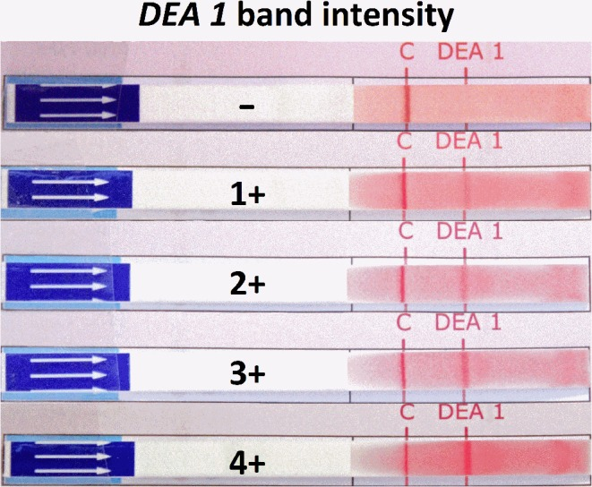
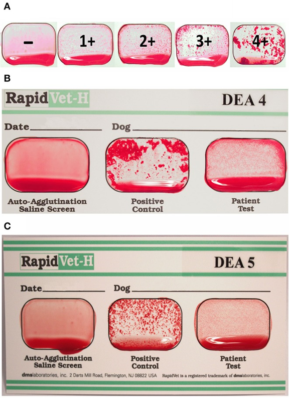
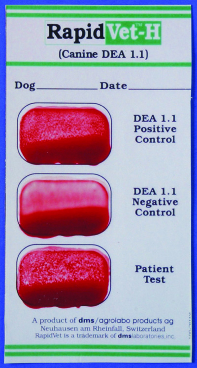

🟥 Кучета

Бърз тест за кръвна група DEA 1.

Интензитета е означен с (-) до (4+), като (-) е отрицателен резултат.
Бърз тест за кръвна група DEA 4 и DEA 5.

(А) Определяне степента на аглутинация от (-) до (4+).
(B) и (C) показват слаба аглутинация за кръвни групи DEA 4 и DEA 5.

🟥 Котки